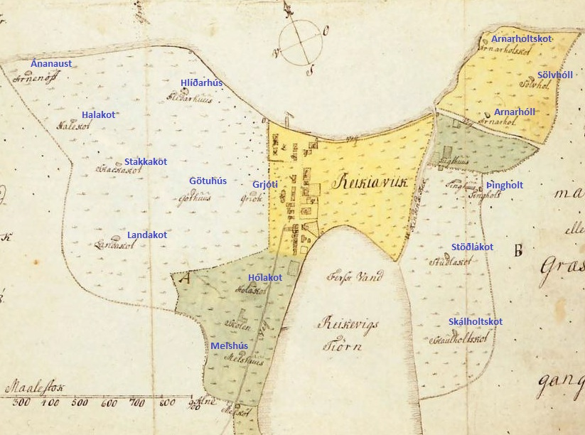
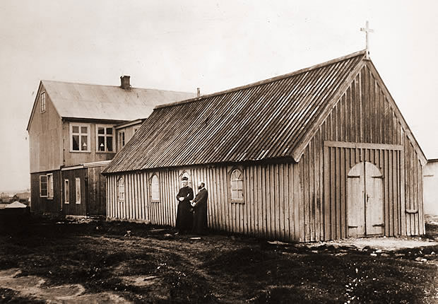
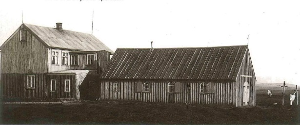

1548 – um 1850
Yfirlitsmynd yfir lendur Reykjavíkur 1787. Blámerktu býlin eru allt torfbæir, timburhús voru aðeins í Kvosinni á þeim tíma. Sjá má Landakot neðarlega vinstra megin. Landakot var ein af hjáleigum Reykjavíkur og þótti einna best þeirra. Óvíst er um upphaf byggðar í Landakoti en getið er um búsetu þar árið 1548. Landakot fylgdi með er Reykjavík varð konungseign um 1600. Árið 1703 var þar einn ábúandi og alls tólf skráðir til heimilis samkvæmt manntali. Bæjarhúsin gömlu stóðu rétt vestan við Landakotsskóla þar sem nú er leiksvæði skólabarna. Þau stóðu þar líklega eitthvað fram yfir 1850.
Auk Landakots eru heimildir um býlið Litla Landakot sem eru þó rýrar og staðsetning þess kots er óljós. Getið er um fjóra heimilismenn í Litla Landakoti í manntali árið 1816.

Yfirlitsmynd yfir lendur Reykjavíkur1787

Ljósmynd af Landakotisögð um 1860
um 1860
Ljósmynd af Landakoti sögð tekin um 1860, þótt líklegra sé að myndin sé 20-30 árum yngri. Vinstra megin er presthúsið byggt 1838 sem stendur enn að stofni til við Túngötu við hlið Landakotsskóla. Húsið byggði Helgi G. Thordersen þáverandi dómkirkjuprestur sem keypti Landakot 1837 og bjó þar um skeið. Í framhaldi bjuggu þar ýmsir þar til franskur trúboðsprestur, séra Bernharður, keypti Landakot árið 1859. Vestan megin við prestssetrið er kapella sem hann útbjó úr útihúsi eða skemmu árið 1860 og telst upphaf kaþólska trúboðsins á Íslandi. Heimildir segja að rétt vestan eða suðvestan við prestssetrið hafi gömlu bæjarhúsin staðið.
um 1900
Ljósmynd af Landakoti sögð tekin nálægt aldamótum 1900. Árið 1821 eignaðist Lars M. Knudsen Landakot og bjó þar til dauðadags árið 1828 og ekkja hans í framhaldi. Þar ólust upp hinar fríðu og föngulegu dætur þeirra hjóna. Þetta var gleðskaparheimili og voru ýmsir ungir menn þar tíðir gestir, t.d. Jónas Hallgrímsson skáld. Og vitað var að Kristjana Knudsen var tilefni heimsókna hans. Öruggar heimildir eru fyrir því að Jónas bað hennar 1832 en var hryggbrotinn.

Ljósmynd af Landakotium 1900